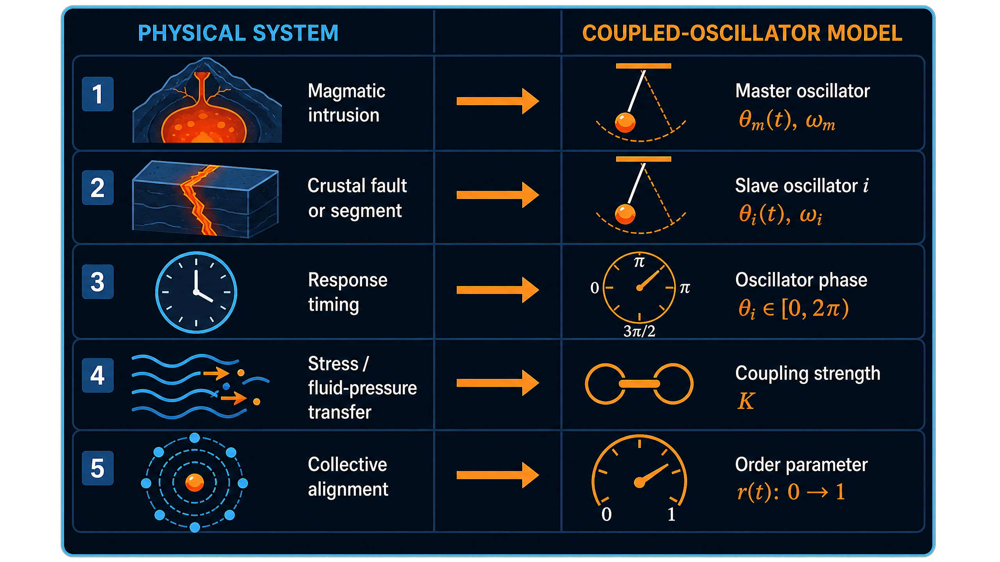

The 2009 Intrusion

A crack filled with rising molten basalt — approximately 10 km long with a maximum opening of 2–4 m, pushing up from roughly 20 km depth — produced a swarm of roughly 30,000 earthquakes over several months.
From geology to mathematics
